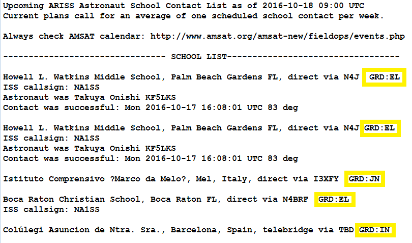
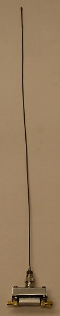
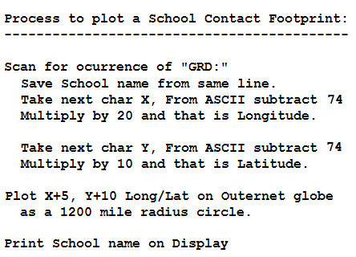
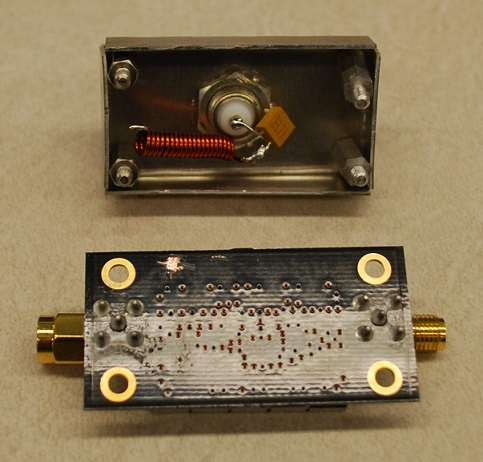
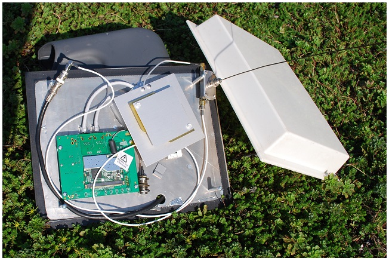

A Grid Plotting Routine for ARISS School Contacts
US Naval Academy Satellite Lab,
Bob Bruninga, WB4APR
lastname@usna.edu
Shown at right is a typical Outernet Ground Station. It is completely self contained. Needing only 5v, 2A power, it receives Outernet files via the three Geostationary satellites and builds an Outernet cache of files and then makes them available to any WiFi device in range via any browser.
See my full OUTNET web page to see the full concept.
One such data file is the Weekly AMSAT Astronaut School Contact Schedule files. This page wonders if we can tie that into the Outernet globe graphics plots to show the locations of the school contacts for others that might want to tune in. And then to use the Outernet SDR receiver to actually tune in the astronaut ham radio downlink on 145.800 MHz.
 . . .
 Plotting ARISS Scheduled Astronaut School Contacts: Wouldn't it be neat if a small script could be written for the Outernet Receiver that could look into the weekly ARISS School Schedule news file and parse out the LAT/LONG of the upcoming school contacts from the listed Grid Square indicated as GRD:XY in the file above. These contacts are with schools all over the world, and during a school contact anyone with a reveiver tuned to the 145.800 MHz downlink can hear the astronauts directlly! As you can see in the above news file, we have added the two-character grid square to each school entry. This is sufficient to locate the school's surrounding 600 by 1000 mile footprint. All stations within that footprint should be able to hear the School contact event directly.
 The image on the right plots the area of that two letter grid on the Outernet Globe application as shown here. That interactive globe graphics is already built-in to the Outernet file system.
Using the Outernet Receiver to Tune it in! And wouldn't it be neat if the Outernet Software defined radio then would simply tune to that frequency directly during the event so that the Outernet receiveer itself coult be used to hear the Astronauts? This is entirely within the tuning capability of the SDR receiver.
My attempts to modify my setup: Of the above tasks, about the only thing I can do is antennas. So here are some photos of my attempts to rig something up. First, I added a series tuned resonant circuit to couple the 2 meter whip to the coax connector on the output of the LNA. The idea was that the SDR can hear the VHF signal there. The photo on the far right then shows the assembled L-band LNA with the added 2m whip antenna.

The next photo then shows the oudoor Outernet Patch antenna and LNA with the modified 2m whip. The green electronics board has nothing to do with this project. It is just something already inside this plastic radome cover.
This DID NOT WORK. ALthough I provided good isolation with the series circuit to the 2m antenna, I did not provide any reject filtering of the 1.5 GHz output of the LNA. SO clearly, with over 30 dB gain going right into the based of the 2m whip, there was huge potential for front-end 1.5 GHz feedback generating huge massive front end overload. After the mod, the Outernet receiver could not find any satellite signals.

Next Steps? Before trying a real diplexer approach, I need someone with the SDR receiver code to simply tune the SDR to the 2m 145.800 MHz signal and make sure that there is enough SDR sensitivity to even hear the ISS in the first place. If that works, then it make sense to persue this. But if the diplexer will also need a 2m LNA, then this project is getting beyond my hopes of a trivial easy-to-do application.
Bob, WB4APR
Bob Bruninga, WB4APR
lastname at usna dot edu